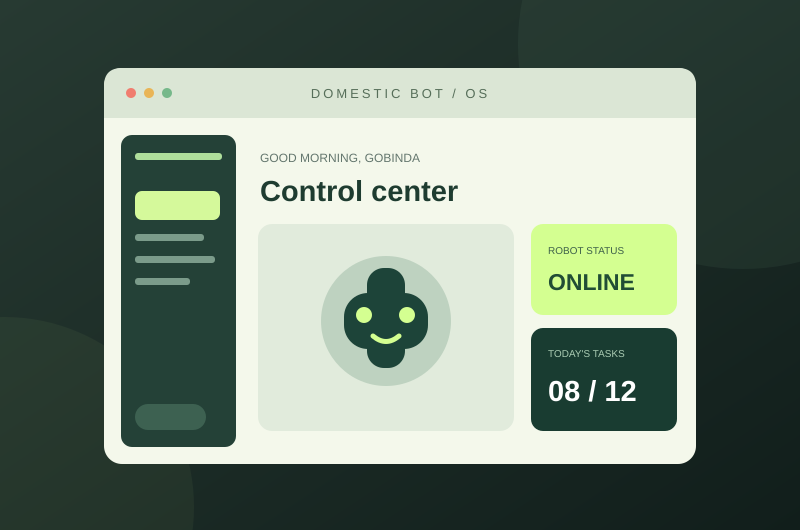
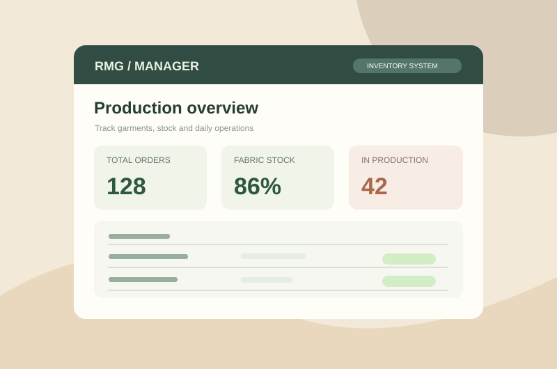

Software development
Turning concepts into practical applications, intuitive interfaces and structured solutions.
Explore applications ↗I'm a Computer Science & Engineering student at Daffodil International University, exploring the space where software, AI, networks and blockchain come together.
DIU BatchComputer Science & Engineering
Diploma CGPARajshahi Polytechnic Institute
GitHub projectsCode, design and experiments
Turning concepts into practical applications, intuitive interfaces and structured solutions.
Explore applications ↗Exploring intelligent systems, human-centered interaction and the possibilities of robotics.
View AI project ↗Interested in connected systems, distributed technology and research-led problem solving.
Explore interests ↗
An AI-assisted robot control interface designed for a science-museum interactive experience.

A Java academic application centered on garment-industry operations and software workflow design.

A software project focused on organizing employee information and practical management workflows.

Coursework exploring the principles and stages behind compiler design.
Open to new ideas, learning opportunities, academic conversations and collaborative projects.